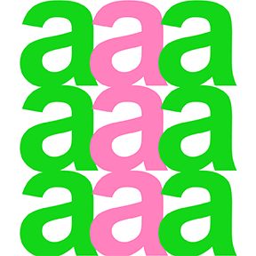
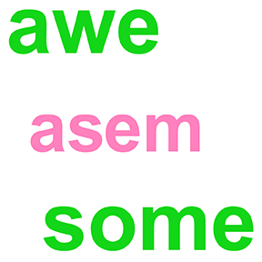
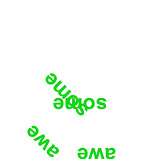
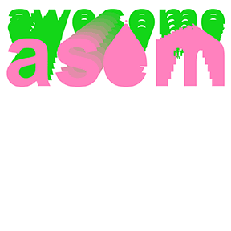
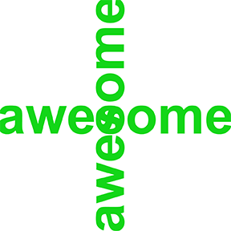
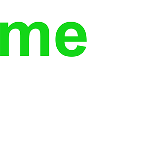
Visual Identity for Open Studios Day
Mason Gross School of the Arts
I developed the visual identity, posters, and social media assets for Open Studios Day at Mason Gross, crafting a bold, contemporary style that reflects the school’s experimental and interdisciplinary spirit.
The system centers on a vibrant yellow-green accent against a deep gray background, creating high contrast and immediate visibility across print and digital platforms. A clear typographic hierarchy and modular layout ensure consistency, adaptability, and scalability across multiple touchpoints.
The result is a dynamic identity that communicates energy, openness, and accessibility—positioning Open Studios Day as a high-impact cultural event that invites audiences to explore and engage with artists’ processes.
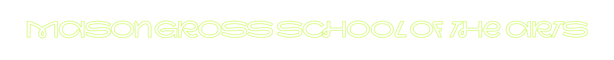

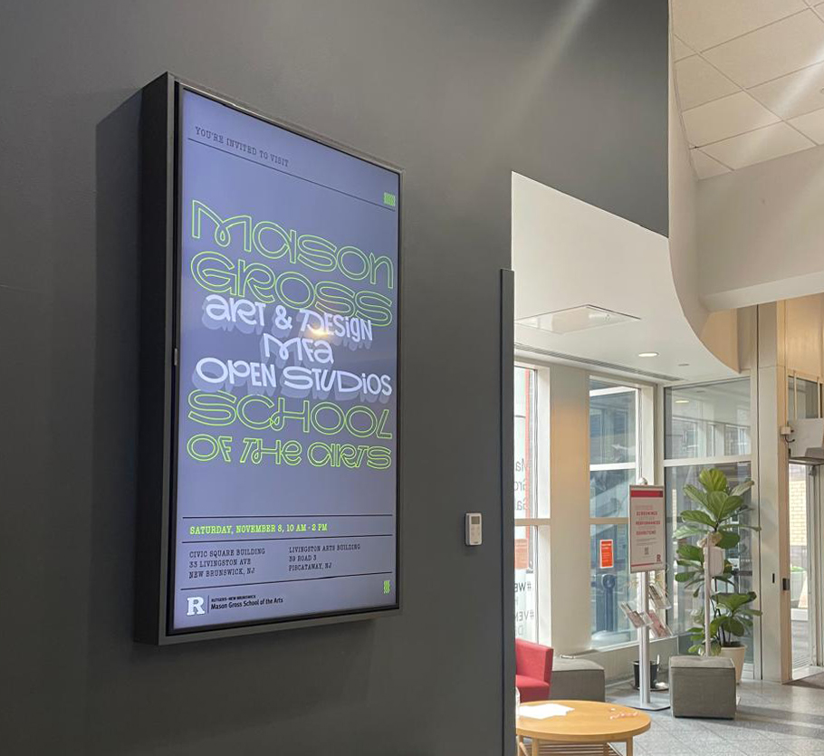

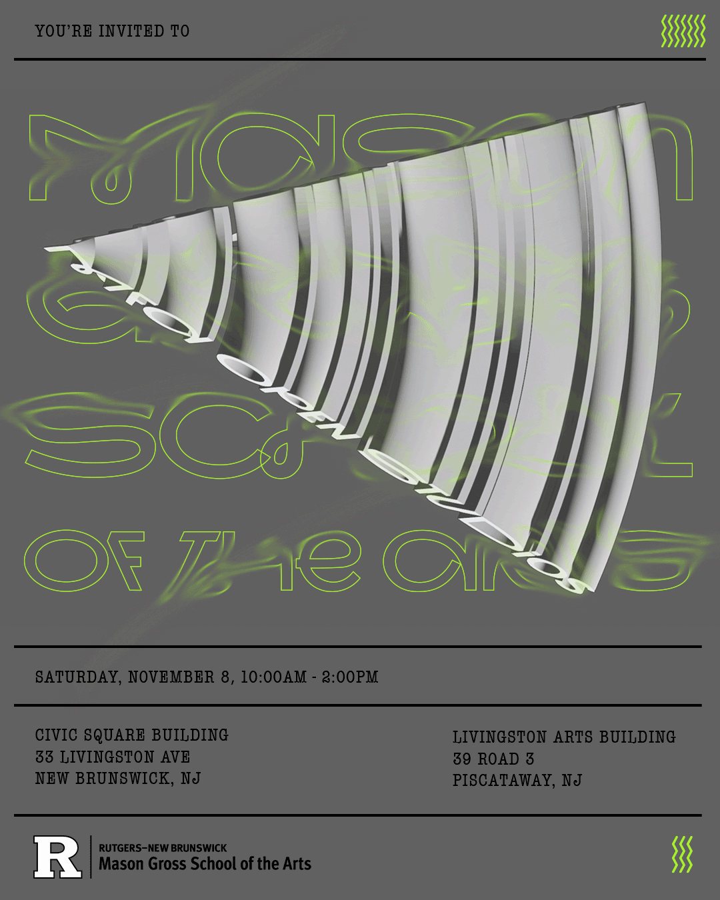
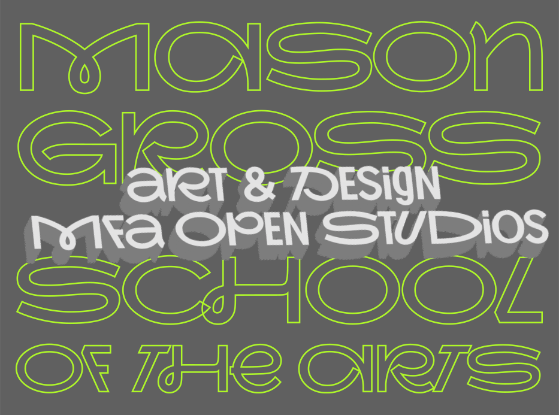
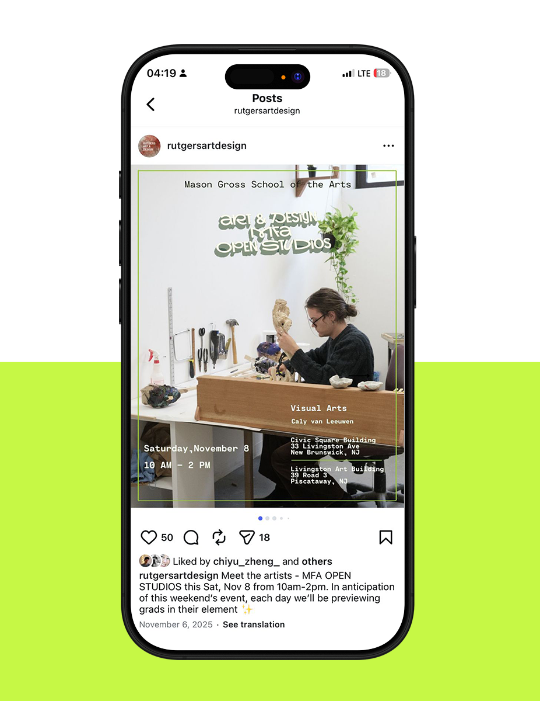